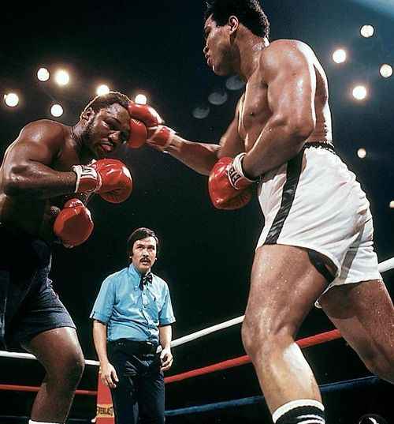
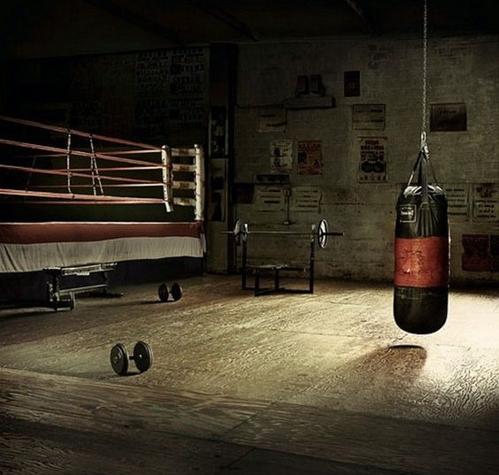
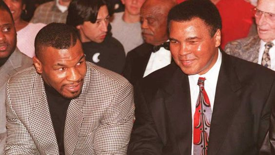

Histoire
Je vais vous parlé personnellement de la boxe anglaise car c'est celle que j'ai personnellement pratiqué et que j'apprécie le plus. au début,ce sport apparaît au XVIIIe siècle, organisée par des parieurs. est un sport de combat dans lequel deux adversaires, de même catégorie de poids et de même sexe, se rencontrent sur un ring, munis de gants rembourrés afin de limiter le risque de coupure, et s'échangent des coups de poing, portés au visage et au buste. Le combat est divisé en intervalles de temps, les rounds, séparés par une minute de repos annoncée par une cloche où le pugiliste pourra être conseillé et soigné si besoin.
Ma Raison
J'ai toujours aimé les sport de combat. Personnellement moi c'étais mon frère qui m'a donner envit de commencer de pratiquer la boxe anglaise. Je le voyais devenir de plus en plus fort tout les jours à apprendre à devenir la meilleur version de soit même ce qui m'a motiver à faire de même. Je me suis inscrit à un club de boxe a Strasbourg avec mon frère et nous y allions ensemble 2 fois par semaine. Cela nous aidait à devenir mailleur en se tirant vers le haut l'un et l'autre tout en ayant une rivalité entre frère.
Mes préférences
Personnellement j'appraiciais beaucoup le célèbre boxeur Muhammed Ali par ses exploits qui ont choqués le monde entier. Il avait un temps de réaction très court qui lui permettait déêtre très rapide donc déesquivé les coups de ses adversaires. Il y a également 2 autre personne que j'apprécis énormément qui ne sont autre que Mike Tyson ainsi que Gervonta Davis. Mike Tyson étais le meilleur en terme de force brute, si il arrivait à atteindre son adversaires, le coup donné cause des dégats importants. Gervonta lui à une capacité de réflexion hors norme, en effet il garde son sang froid et attend le moment idéale pou frapper au bon moment avec un coup précis, rapide et puissant. Ceux sont eux que je soutiens le plus dans la boxe donc je souhaite avoir les même atouts que eux et je me donnerais les moyens pour devenir plus fort.
Conclusion
In conclusion, boxing is a sport in what you can take care of your self but also to care about your family or friends. This sport help you in your body and be in form in every sutiation. Praticing box can allow you to feel safe and good in your well-being.